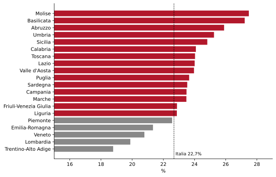
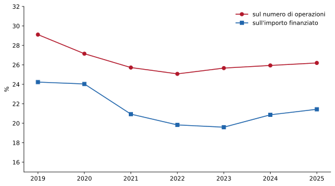
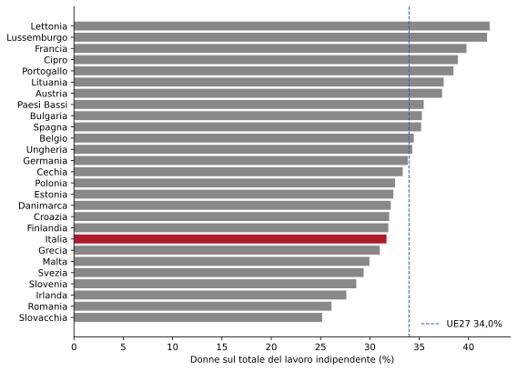
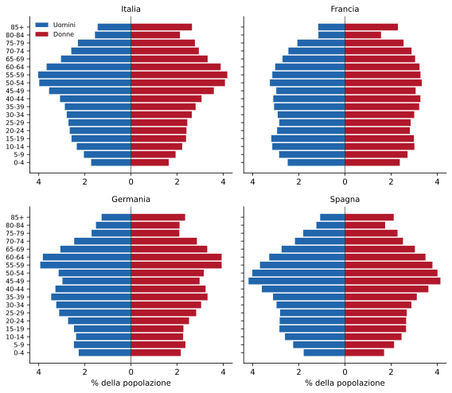

Le imprese femminili in Italia
Quante sono, dove operano, quanto credito e quante garanzie pubbliche ricevono, e come si colloca l’Italia in Europa
Paolo Volterra ![]()
Italiano. A metà 2026 le imprese femminili attive in Italia sono circa 1,14 milioni, il 22,7% delle imprese attive: una quota rimasta quasi immobile dal 2018, mentre il numero cala allo stesso ritmo del totale. Sono più presenti nel Mezzogiorno interno e nei servizi alla persona, dove superano il 60% delle imprese, e quasi assenti nelle costruzioni. Fra le ditte individuali che hanno un fido bancario le donne sono poco meno di un quarto e usano in media circa il 10% di credito in meno degli uomini; nel 2025 il credito si è ridotto per entrambi nella stessa misura. Nel Fondo di garanzia per le PMI le donne titolari di ditte individuali ricevono circa un quarto delle garanzie ma un quinto dell’importo finanziato, con finanziamenti più piccoli. L’Italia ha il numero più alto di imprenditrici e lavoratrici autonome dell’Unione europea, ma la quota delle donne sul lavoro indipendente resta inferiore alla media europea.
English. In mid-2026 Italy had about 1.14 million active women-led businesses, 22.7% of all active firms: a share almost unchanged since 2018, while their number has declined at the same pace as the total. They are most common in the inner South and in personal services, where they exceed 60% of firms, and nearly absent in construction. Among sole proprietorships with a bank credit line, women are just under one quarter and draw on average about 10% less credit than men; in 2025 credit contracted by the same amount for both. In the Italian SME Guarantee Fund, women sole proprietors receive about one quarter of the guarantees but one fifth of the financed amount, with smaller loans. Italy has the largest number of women entrepreneurs and self-employed in the European Union, yet women’s share of self-employment remains below the EU average.
imprenditoria femminile, imprese femminili, credito, Fondo di garanzia, lavoro indipendente, Italia
1 Il 19 novembre e i numeri che circolano
Il 19 novembre si celebra la Giornata mondiale dell’imprenditoria femminile (Women’s Entrepreneurship Day). In questa occasione circolano molti numeri sulle imprenditrici europee e italiane [1]. Questo documento parte da quei numeri e li riconduce alle statistiche ufficiali da cui derivano.
Nell’Unione europea, nel 2025, le donne fra 15 e 74 anni che lavoravano in proprio erano 9,6 milioni, il 34,0% di tutti i lavoratori indipendenti; 2,5 milioni di loro avevano dipendenti [2]. La quota femminile è più alta in Lettonia (42,1%), Lussemburgo (41,9%) e Francia (39,8%), più bassa in Slovacchia (25,2%), Romania (26,1%) e Irlanda (27,6%).
Un secondo gruppo di numeri viene dal rapporto dell’OCSE e della Commissione europea sugli imprenditori «mancanti». Se le donne avviassero nuove attività con la stessa frequenza degli uomini di 30-49 anni, nell’Unione ci sarebbero 5,5 milioni di imprenditrici in più, circa il 73% di tutti gli imprenditori mancanti [3].1 Lo stesso rapporto indica che fra il 2018 e il 2022 la paura di fallire frenava il 50% delle donne e il 43% degli uomini, e che il 43% delle donne riteneva di avere le competenze per avviare un’impresa, contro il 53% degli uomini.2 Questi valori vengono da indagini sulle opinioni della popolazione e riguardano le attività appena avviate: non sono confrontabili con i conteggi delle imprese iscritte al Registro.
2 Di che cosa si parla
L’impresa femminile è una definizione statistica del Registro delle imprese. Un’impresa è femminile quando la partecipazione delle donne, considerando insieme le quote di proprietà e le cariche amministrative, supera complessivamente la metà [4].3 Nella ditta individuale basta che la titolare sia una donna; nelle società la regola tiene conto sia dei soci sia degli amministratori.
Due conteggi circolano con frequenza e non vanno confusi. Le imprese registrate comprendono anche quelle inattive, sospese o in liquidazione: a fine 2025 le imprese femminili registrate erano 1.302.974, il 22,2% del totale [5]. Le imprese attive sono quelle che esercitano effettivamente un’attività, ed è su queste che si basano i dati di questo documento.
3 Quante sono e come cambiano
Al 30/06/2026 le imprese femminili attive erano 1.138.334, il 22,7% delle 5.019.166 imprese attive in Italia [6]. A fine 2018 erano 1.165.188, il 22,6%. In sette anni e mezzo il numero è diminuito del 2,3%, quasi esattamente come quello di tutte le imprese attive (-2,6%). Di conseguenza la quota femminile è rimasta compresa fra il 22,6 e il 22,8% per tutto il periodo. Al 30 settembre 2026 le imprese femminili attive erano 1.138.951, l’1,0% in meno rispetto a un anno prima.

Figura 1: Quota delle imprese femminili sulle imprese attive per regione (%). Fonte: elaborazione su dati InfoCamere.
In parole semplici: in ogni regione circa un’impresa attiva su cinque o su quattro è guidata da donne. Le quote più alte (in rosso, sopra la media nazionale) sono nelle regioni del Mezzogiorno interno e del Centro, le più basse nel Nord-Est e in Lombardia.
La quota più alta si osserva in Molise (27,5%) e in Basilicata (27,2%), la più bassa in Trentino-Alto Adige (18,8%). In valore assoluto la regione con più imprese femminili resta la Lombardia, con 162.187 imprese, nonostante una quota fra le più basse.
4 In quali settori
| Settore | Imprese femminili | % sulle femminili | % femminile nel settore | Var. % su un anno |
|---|---|---|---|---|
| Commercio all’ingrosso e al dettaglio | 275.807 | 24,2 | 25,0 | -4,4 |
| Agricoltura, silvicoltura e pesca | 182.298 | 16,0 | 27,6 | -2,4 |
| Altre attività di servizi (incluse quelle alla persona) | 138.120 | 12,1 | 41,4 | 1,4 |
| Alloggio e ristorazione | 120.768 | 10,6 | 30,3 | 0,0 |
| Attività manifatturiere | 75.501 | 6,6 | 18,0 | -2,9 |
| Attività immobiliari | 68.025 | 6,0 | 22,5 | 2,5 |
| Noleggio, agenzie di viaggio, servizi alle imprese | 57.283 | 5,0 | 26,7 | 0,9 |
| Attività professionali, scientifiche e tecniche | 50.582 | 4,4 | 20,9 | 3,7 |
| Costruzioni | 44.564 | 3,9 | 6,1 | -2,5 |
| Attività finanziarie e assicurative | 32.921 | 2,9 | 22,0 | 5,4 |
| Telecomunicazioni, programmazione e servizi informatici | 21.576 | 1,9 | 19,8 | 0,1 |
| Attività artistiche, sportive e di intrattenimento | 18.641 | 1,6 | 24,3 | 1,9 |
| Sanità e assistenza sociale | 16.909 | 1,5 | 36,9 | 3,1 |
| Trasporto e magazzinaggio | 15.817 | 1,4 | 11,3 | 0,1 |
| Istruzione | 11.399 | 1,0 | 31,8 | 2,9 |
Tabella 1: Imprese femminili attive per sezione di attività economica (ATECO 2025), 30 settembre 2026. Sezioni con almeno 10.000 imprese femminili. Fonte: elaborazione su dati InfoCamere.
In parole semplici: quasi un quarto delle imprese femminili è nel commercio e una su sei in agricoltura. Le donne pesano di più nei servizi alla persona, nella sanità e assistenza sociale, nell’istruzione e nella ristorazione, molto meno nelle costruzioni. Nell’ultimo anno il calo si concentra nel commercio, nella manifattura e in agricoltura.
Il caso più netto è quello dei servizi alla persona (acconciatura, estetica, lavanderie e simili): in questa attività 128.207 imprese su 208.769, il 61,4%, sono femminili [6]. All’opposto, nelle costruzioni la quota femminile è del 6,1%.
5 Il credito bancario
La Centrale dei rischi della Banca d’Italia distingue per sesso del titolare il credito alle famiglie produttrici, cioè alle ditte individuali con non più di cinque addetti, artigiane e non artigiane [7]. È la parte delle imprese femminili per cui il sesso è definito senza ambiguità; la Centrale registra soltanto le esposizioni di almeno 30 mila euro.
| Data | Donne con fido | Uomini con fido | Quota donne (%) | Credito medio donne (migliaia €) | Credito medio uomini (migliaia €) |
|---|---|---|---|---|---|
| Fine 2018 | 96.068 | 332.977 | 22,4 | 94,1 | 106,0 |
| Fine 2025 | 93.309 | 308.909 | 23,2 | 91,4 | 101,1 |
| 06/2026 | 93.356 | 307.385 | 23,3 | 91,4 | 101,1 |
Tabella 2: Credito bancario alle famiglie produttrici per sesso del titolare. Fonte: elaborazione su dati Banca d’Italia, Centrale dei rischi.
In parole semplici: poco meno di un quarto dei titolari di ditte individuali che hanno un fido in banca sono donne, e la loro quota cresce lentamente. In media le donne usano meno credito degli uomini.
Fra fine 2018 e 06/2026 le titolari con un fido sono diminuite del 2,8%, i titolari del 7,7%: la quota femminile è salita dal 22,4 al 23,3%. Il credito medio utilizzato da una titolare è di 91,4 mila euro, il 10% in meno di quello di un titolare (101,1 mila).
Nel 2025 il credito utilizzato dalle donne è diminuito del 3,6%, in linea con il calo di circa il 3,5% citato in occasione della Giornata dell’imprenditoria femminile [1].4 Per gli uomini il calo è stato quasi identico (3,7%): la riduzione del credito alle ditte individuali non è quindi specifica delle imprese femminili.
Una differenza di credito medio non dimostra, da sola, una discriminazione. Uno studio della Banca d’Italia sulle piccole imprese dell’area dell’euro ha trovato che le imprese femminili chiedono prestiti meno spesso e se li vedono rifiutare più spesso, ma che queste differenze si spiegano quasi interamente con la dimensione, l’età e il settore delle imprese [8].5 Lo stesso studio segnalava però, per l’Italia, una probabilità più alta di rifiuto per le imprese guidate da donne.6
6 Le garanzie del Fondo di garanzia per le PMI
Il Fondo di garanzia per le PMI pubblica le singole operazioni garantite, ma non indica se l’impresa è femminile [9]. Per le persone fisiche (ditte individuali e professionisti) il sesso del titolare si ricava però dal codice fiscale, nel quale il giorno di nascita delle donne è aumentato di 40. Nel 2025 queste operazioni erano il 20% del totale; le società restano escluse dal confronto.

Figura 2: Fondo di garanzia per le PMI, garanzie a persone fisiche: quota delle donne sul numero di operazioni e sull’importo finanziato (%). Fonte: elaborazione su open data del Fondo di garanzia per le PMI.
In parole semplici: fra i titolari di ditte individuali che ottengono una garanzia pubblica, le donne sono circa uno su quattro, ma ricevono circa un quinto dei finanziamenti garantiti, perché i loro prestiti sono più piccoli.
Nel 2025 le donne hanno ottenuto 12.811 garanzie, il 26,2% del totale delle persone fisiche, e il 21,4% dell’importo finanziato. Il finanziamento mediano era di 30.000 euro per le donne e di 40.000 per gli uomini. Nel 2019 la quota femminile sul numero era del 29,1%; nel 2020 era del 27,1% e nel 2021 del 25,7%. Il massimo della quota femminile nel periodo considerato si osserva quindi nel 2019; dal 2022 la quota oscilla intorno al 26%. Le donne pesano quindi sulle garanzie un po’ più che sul credito bancario delle ditte individuali, ma con importi più piccoli.
Le professioniste sono una piccola parte delle persone fisiche garantite dal Fondo. Nel 2025 le operazioni ad attività professionali, scientifiche, tecniche e sanitarie erano 2.161, il 4,4% di quelle a persone fisiche; le donne vi pesavano per il 26,7% delle operazioni e il 24,0% dell’importo finanziato, valori vicini a quelli delle altre attività (26,2% e 21,3%). Il Fondo ha anche una sezione speciale riservata alle imprese femminili, finanziata dal Dipartimento per le Pari Opportunità. Fra il 2014 e il 2021 ha accolto 16.315 operazioni, quasi tutte nei primi anni; dal novembre 2016 copre soltanto le garanzie prenotate direttamente dall’impresa, e le operazioni sono scese a poche decine l’anno [10].7 Negli open data del Fondo risultano 60 operazioni a valere sulla sezione dal 2020 al 2025, 1 nel 2025 [9].
7 Gli aiuti dedicati
La principale misura nazionale riservata alle imprese femminili negli ultimi anni è il Fondo impresa femminile: dal 22/09/2022 al 01/10/2026 ha concesso 233,2 milioni di euro di aiuti a 2.652 imprese [11]. Le altre misure pubbliche che nel nome richiamano le donne riguardano soprattutto l’assunzione di lavoratrici, non la creazione o la crescita di imprese guidate da donne.
L’esperienza della prima legge sull’imprenditoria femminile (legge 215 del 1992, applicata dal 1997 per circa un decennio) invita a misurare gli effetti nel tempo. Una valutazione della Banca d’Italia ha trovato che le imprese finanziate sopravvivevano più a lungo delle altre solo nei primi anni.8
8 Il confronto europeo
Secondo l’indagine europea sulle forze di lavoro, nel 2025 le donne che lavorano in proprio (imprenditrici e lavoratrici autonome) erano in Italia 1.574 mila, più che in Francia (1.545 mila) e in Germania (1.170 mila) [2]. È il primato richiamato dalle associazioni di categoria.9
| Paese | Donne, 15 anni e oltre (migliaia) | Donne, 25-49 anni (migliaia) | Quota delle donne, 15-74 anni (%) |
|---|---|---|---|
| Italia | 1.574,1 | 841,2 | 31,7 |
| Francia | 1.544,7 | 971,4 | 39,8 |
| Germania | 1.169,8 | 483,6 | 33,8 |
| Spagna | 1.128,3 | 581,7 | 35,2 |
| Polonia | 1.024,1 | 632,0 | 32,5 |
| Paesi Bassi | 548,5 | 260,5 | 35,5 |
| Unione europea (27) | 9.688,1 | 5.185,0 | 34,0 |
Tabella 3: Donne che lavorano in proprio e loro quota sul lavoro indipendente, 2025. Fonte: elaborazione su dati Eurostat, indagine sulle forze di lavoro.
In parole semplici: l’Italia ha più imprenditrici e lavoratrici autonome di ogni altro paese dell’Unione, ma soprattutto perché ha molti lavoratori indipendenti in generale. Fra le donne di 25-49 anni la Francia ne conta di più, e la quota delle donne sul lavoro indipendente è in Italia più bassa della media europea.
Il primato italiano dipende quindi dalla grande diffusione del lavoro indipendente e dalle classi di età più mature. La quota delle donne sul totale dei lavoratori indipendenti è in Italia del 31,7%, contro il 34,0% della media dell’Unione e il 39,8% della Francia.
Il confronto europeo riguarda persone occupate che lavorano in proprio, comprese le libere professioniste, mentre il Registro delle imprese conta imprese e include anche le società. Le due misure descrivono aspetti diversi dell’imprenditoria femminile e le loro percentuali hanno denominatori diversi.
Una parte delle donne che lavorano in proprio sono professioniste: medici, avvocate, architette, ingegnere, commercialiste e altre professioni ad alta qualificazione. La classificazione europea delle professioni (ISCO-08) le raggruppa nelle «professioni intellettuali e scientifiche», che permettono di separarle dalle altre lavoratrici indipendenti [2].
| Paese | Donne indipendenti (migliaia) | di cui professioniste (migliaia) | altre (migliaia) | Quota delle donne fra le professioniste (%) | Quota delle donne nelle altre attività (%) |
|---|---|---|---|---|---|
| Italia | 1.566 | 484 | 1.082 | 45,3 | 27,9 |
| Francia | 1.538 | 562 | 976 | 49,4 | 35,8 |
| Germania | 1.148 | 509 | 639 | 43,2 | 28,9 |
| Spagna | 1.124 | 298 | 827 | 46,6 | 32,3 |
| Unione europea (27) | 9.587 | 3.139 | 6.448 | 44,2 | 30,5 |
Tabella 4: Donne che lavorano in proprio, 15-74 anni, distinte fra professioni intellettuali e scientifiche (ISCO-08 gruppo 2) e altre attività, 2025. Fonte: elaborazione su dati Eurostat, indagine sulle forze di lavoro.
In parole semplici: fra i professionisti indipendenti le donne sono quasi la metà in tutti i grandi paesi. Nelle altre attività in proprio sono molte meno, e in Italia meno che nella media europea. Anche senza le professioniste l’Italia resta il paese dell’Unione con più donne che lavorano in proprio.
In Italia le professioniste sono il 31% delle donne che lavorano in proprio, contro il 33% della media europea. Il divario italiano riguarda soprattutto le attività non professionali, dove le donne sono il 27,9% contro il 30,5% dell’Unione. La classificazione descrive il mestiere svolto e non la forma giuridica; alcune professioni regolate da un ordine, come quella del geometra, ricadono fra le professioni tecniche e non sono comprese fra le professioniste. I liberi professionisti non iscritti al Registro delle imprese, inoltre, non compaiono fra le imprese femminili: è una delle ragioni della distanza fra le due misure.

Figura 3: Quota delle donne sul totale delle persone che lavorano in proprio, 15-74 anni, nei 27 Stati membri dell’UE, 2025 (%). La linea indica la quota UE27, calcolata sui totali europei. Fonte: elaborazione su dati Eurostat.
In parole semplici: il grafico confronta la presenza delle donne nel lavoro indipendente di tutti i paesi dell’Unione, tenendo conto della diversa dimensione dei paesi. L’Italia è evidenziata in rosso e si colloca sotto la quota europea.
La struttura per età della popolazione aiuta a leggere il confronto. L’Italia ha la popolazione più anziana dei quattro grandi paesi dell’Unione: al 1° gennaio 2025 le persone con 65 anni e più erano il 24,7% del totale, contro il 22,7% in Germania, il 21,9% in Francia e il 20,7% in Spagna [13].

Figura 4: Popolazione per sesso e classe di età al 1° gennaio 2025 in Italia, Francia, Germania e Spagna (% della popolazione totale di ciascun paese). Uomini a sinistra, donne a destra. Fonte: elaborazione su dati Eurostat; alcuni dati sono provvisori.
In parole semplici: ogni piramide mostra quante persone ci sono in ciascuna fascia di età, uomini a sinistra e donne a destra. La piramide italiana è più stretta alla base e più larga in alto: l’Italia ha la quota più bassa di giovani e la più alta di anziani; la Spagna ha una base quasi altrettanto stretta, la Francia la più larga. Nelle età più avanzate prevalgono ovunque le donne.
Il divario italiano rispetto all’UE è di 2,3 punti percentuali. Il riferimento europeo è il rapporto fra tutte le lavoratrici indipendenti e tutti i lavoratori indipendenti dell’Unione, non la media semplice delle percentuali nazionali. Questa misura descrive la composizione per sesso del lavoro indipendente; non misura la probabilità che una donna diventi imprenditrice, per la quale servirebbe un diverso denominatore.
9 Che cosa resta da misurare
- Credito alle società femminili. La Centrale dei rischi distingue per sesso solo le persone fisiche; per le società femminili, circa due imprese femminili su cinque (le ditte individuali erano il 60,1% delle registrate a fine 2025 [5]), non esiste un dato pubblico sul credito.
- Garanzie alle società femminili. Il Fondo di garanzia non segnala se un’impresa è femminile; la quota calcolata qui riguarda solo le ditte individuali e i professionisti.
- Differenze a parità di caratteristiche. I dati aggregati mostrano importi più piccoli per le donne, ma non permettono di separare l’effetto del genere da quello di dimensione, settore ed età dell’impresa, come invece fanno gli studi su dati individuali.
Riferimenti
Nota metodologica
Questo documento nasce dall’interazione di tre componenti. L’autore definisce le domande, esercita il giudizio critico e assume la responsabilità scientifica ed editoriale del risultato. Strumenti di intelligenza artificiale generativa sono impiegati a supporto della ricerca bibliografica, della lettura, della sintesi, della riorganizzazione argomentativa e della revisione del testo. Un’infrastruttura open source sviluppata dall’autore automatizza il reperimento, l’armonizzazione e il controllo dei dati dalle fonti statistiche ufficiali, e mantiene l’elaborazione documentata e riproducibile.
Le fonti sono pubblicamente accessibili e citate con la loro denominazione ufficiale; l’analisi è pertanto integralmente auditabile e replicabile da terzi a partire da esse. Le tabelle e i grafici sono elaborazioni dell’autore: calcoli, aggregazioni, trasformazioni e scelte di rappresentazione sono attribuibili all’autore e non agli enti produttori dei dati.
La responsabilità per le fonti utilizzate, le analisi condotte, le elaborazioni effettuate, le interpretazioni proposte e le conclusioni formulate resta interamente in capo all’autore. L’intelligenza artificiale è stata impiegata come ambiente di supporto cognitivo ed editoriale, non come fonte primaria, autore autonomo o sostituto del giudizio critico.
9.1 Note
Note
«If women participated in early-stage entrepreneurship at the same rate as 30-49 year old men, there would be an additional 5.5 million women entrepreneurs in the EU» [3, p. 50]↩︎
«In the EU, 50% of women self-reported this barrier relative to 43% of men» [3, p. 60]↩︎
«In generale si considerano femminili le imprese la cui partecipazione di donne risulta complessivamente superiore al 50% mediando le composizioni di quote di partecipazione e di cariche amministrative detenute da donne per tipologia di impresa, in base ai criteri definiti nella tabella sotto indicata.» [4, p. 1]↩︎
«Sul fronte finanziario, il credito alle microimprese fino a 5 addetti condotte da donne nell’ultimo trimestre del 2025 è calato del 3,5% su base annua.» [1]↩︎
«To sum up, female enterprises apparently do experience a tougher access to finance, but not merely due to the fact they are led by a woman.» [8, p. 18]↩︎
«Some differences emerge across countries: German and Italian women-led firms are more likely to have their loan request rejected, while Spanish female firms exhibit a lower probability of obtaining at least part of the requested loan.» [8, p. 19]↩︎
«dalle circa 7.000 operazioni accolte nel 2015 si è passati alle circa 90 nel 2017» [10, p. 10]↩︎
«After five years the survival patterns are very similar, leading us to conclude that the incentive scheme had no permanent effect on the subsidized firms but only produced a “honeymoon effect”.» [12, p. 3]↩︎
«con 1.574.000 imprenditrici e lavoratrici autonome il nostro Paese è primo nell’Unione europea» [1]↩︎
Vedi anche
- Molte, piccole, sottofinanziate: il credito alle microimpreseLe micro e piccole imprese sono circa il 99% delle imprese italiane ma ricevono poco più del 15% del credito bancario alle imprese.
- Molte, piccole, sottofinanziate: il credito alle microimpreseLe imprese sotto i venti addetti ricevono meno del 15% del credito, e la quota scende. L’indagine BCE sull’accesso al finanziamento indica che il calo è soprattutto di domanda; l’offerta pesa sul prezzo dei piccoli prest
- Dalla politica industriale al credito di filieraI grandi investimenti monitorati dal MIMIT aprono uno spazio per una politica creditizia orientata allo sviluppo del Mezzogiorno.